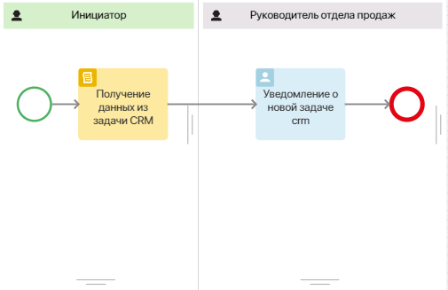
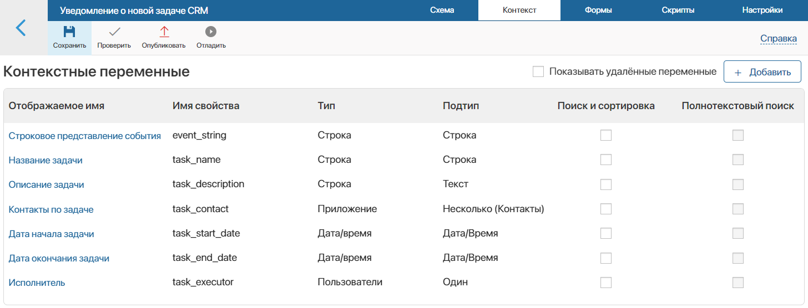
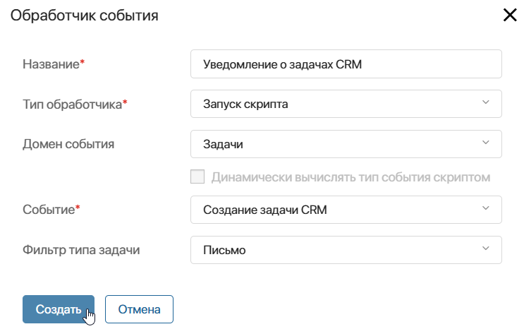

Вы можете создать обработчик событий, который будет отслеживать различные действия с задачей CRM и запускать настроенный скрипт или бизнес‑процесс. Настройка обработчика событий осуществляется в рамках созданного пользовательского модуля.
начало внимание
Обработчик событий для задач CRM доступен при активации одного из платных решений CRM, в котором включено использование задач этого типа. Создавать модуль и настраивать в нём обработчики событий могут только администраторы системы.
конец внимание
Пример обработчика с отслеживанием создания задачи CRM
Данные о задаче и элементе, по которому она поставлена, поступают в обработчик в виде JSON-файла. Вы можете получить из него отдельные значения свойств из контекста задачи. Затем их можно передать в настроенный бизнес-процесс или скрипт, с которым связан обработчик событий. Например, так можно использовать ID задачи, дату её создания и окончания, ответственного за выполнение пользователя и т. д.
Рассмотрим пример обработчика событий, в котором при создании задачи CRM типа Письмо с помощью скрипта обрабатывается JSON‑файл с данными об этой задаче. Затем они передаются в бизнес-процесс и записываются в отдельные переменные. В ходе процесса руководитель отдела продаж получает задачу ознакомления с деталями добавленного письма.
Для настройки обработчика, выполните следующие действия:
- Перейдите в раздел Администрирование > Модули и создайте пользовательский модуль.
- В настройках модуля перейдите на вкладку Процессы и добавьте бизнес-процесс, который будет выполняться каждый раз после создания задачи CRM.
Для нашего примера добавим простой процесс Уведомление о новой задаче CRM. Его схема будет выглядеть следующим образом:

- В дизайнере бизнес-процессов перейдите на вкладку Контекст и добавьте переменные, в которые обработчик в результате создания задачи передаст данные о ней. При создании каждой переменной выберите код, тип и подтипы приведённые ниже:

- Строковое представление события — в переменную запишется строковое представление json-объекта, содержащего данные о задаче CRM;
- Название задачи, Контакты по задаче, Описание задачи, Дата начала задачи, Дата окончания задачи, Исполнитель — свойства, в которые с помощью скрипта в процессе передаются полученные данные из созданной задачи.
- Перейдите на вкладку Схема. В зоне ответственности Инициатор сразу после стартового события разместите блок Скрипт и задайте в нём функцию
afterInit. С помощью скрипта в функции из полученного от обработчика JSON-файла формируется строковое представление данных о задаче, а затем информация записывается в отдельные свойства.
Пример скрипта для получения данных о задаче CRM из JSON-файла
async function afterInit(): Promise<void> { |
- Перейдите на схему процесса и создайте статистическую зону ответственности, поскольку задача назначается руководителю отдела продаж, записанному в элемент оргструктуры.
- Чтобы руководитель мог ознакомиться с данными о созданном письме, полученными из обработчика событий, разместите в дополнительной зоне ответственности блок Задача. На форму задачи вынесите свойства, в которые в процессе записывается информация о письме: Название задачи, Контакты по задаче, Описание задачи, Дата начала задачи, Дата окончания задачи, Исполнитель.
- Сохраните и опубликуйте процесс.
- В настройках модуля перейдите на вкладку Обработка событий. Добавьте обработчик, указав: название обработчика, домен — Задачи, событие — Создание задачи CRM, тип задачи — Письмо, тип обработчика — Запуск скрипта.

- На открывшейся странице настроек обработчика событий перейдите на вкладку Скрипты. В функции
actionукажите скрипт, который будет преобразовывать JSON-файл в строковое представление и запускать настроенный ранее процесс Уведомление о новой задаче CRM:
async function action(): Promise<void> {
// Получаем строковое представление данных о задаче, создание которой запустило обработчик, и сохраняем их в константу task_json_string:
const task_json_string = JSON.stringify(Context.data.task);
// Запускаем раннее созданный бизнес-процесс, передав task_json_string в переменную Строковое представление события из контекста процесса:
await Namespace.processes.uvedomlenie_o_novoi_zadache_crm.run({
event_string: task_json_string,
})
}
- На верхней панели страницы нажмите Сохранить, а затем Опубликовать, чтобы активировать обработчик событий.
- Вернитесь на основную страницу модуля и включите его.
Теперь при включённом модуле, когда пользователь создаст задачу CRM — Письмо, в системе сработает обработчик событий. C помощью скрипта он запустит настроенный бизнес-процесс. Руководитель отдела продаж получит задачу, в которой сможет ознакомиться со всеми данными о задаче.